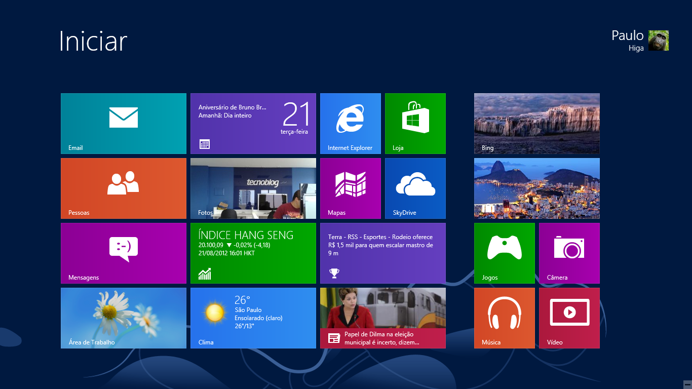

O Windows 8 foi uma resposta ao saturamento da geração passada, focando em ser minimalista ao extremo, e usava cores sólidas com a logo centralizada como botões,e removendo a barra de menu. a decisão foi odiada por muitos, o que fez o Windows 8 ser considerado por muitos como o pior Windows, tanto em software quanto principalmente, design. A estética utilizada é conhecida como "metro".

Fonte: tecnoblog